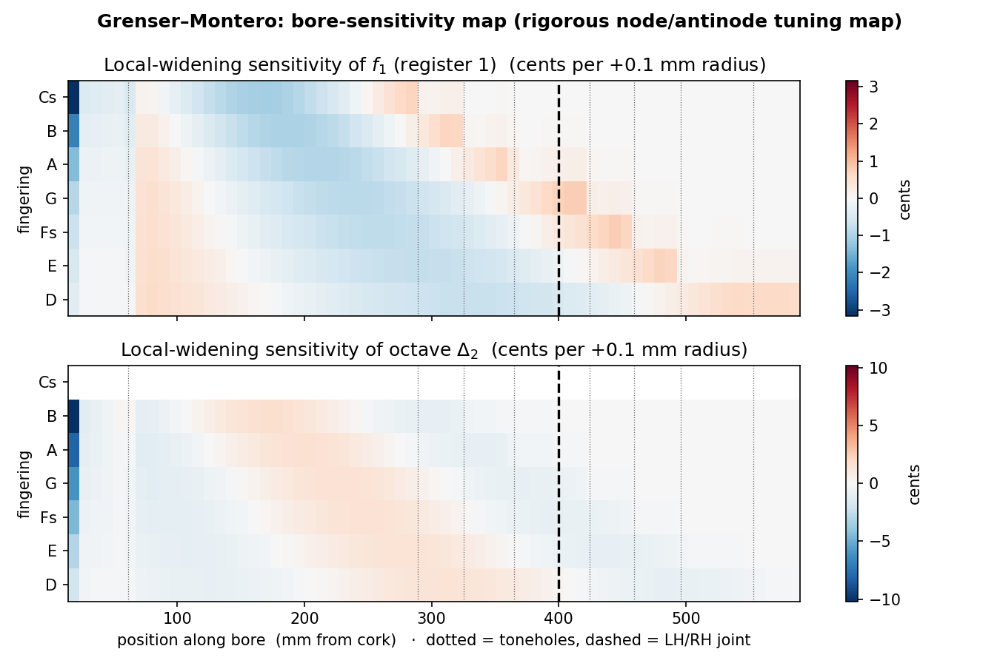
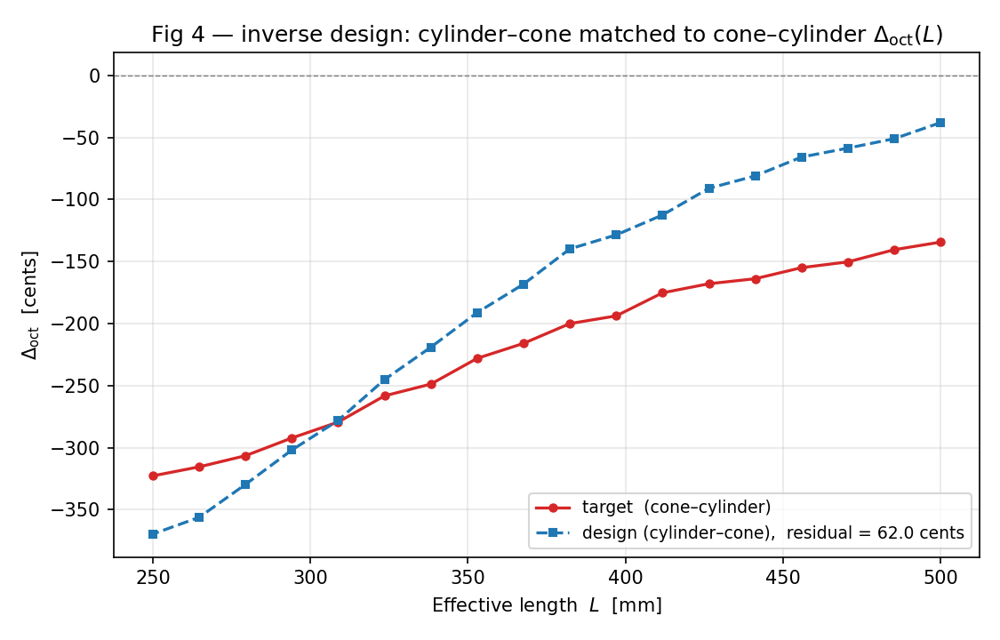
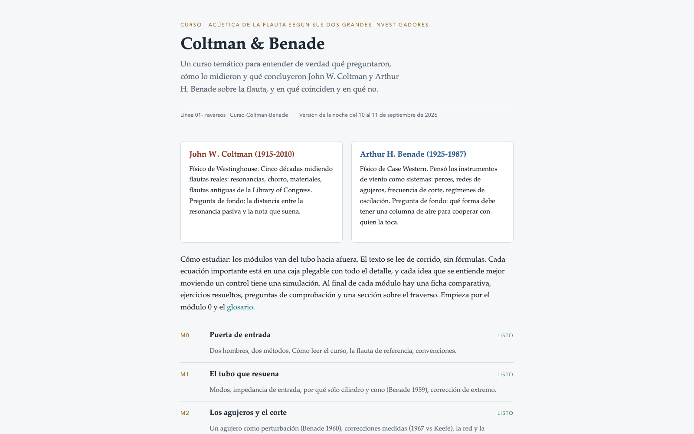
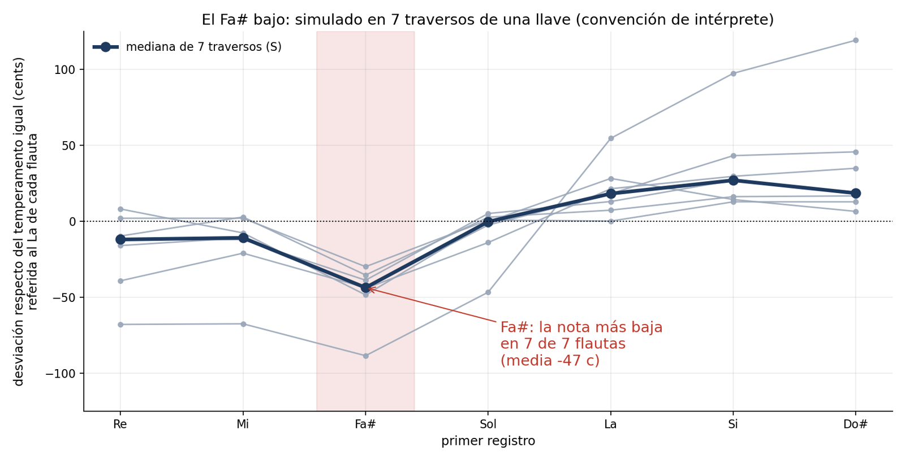
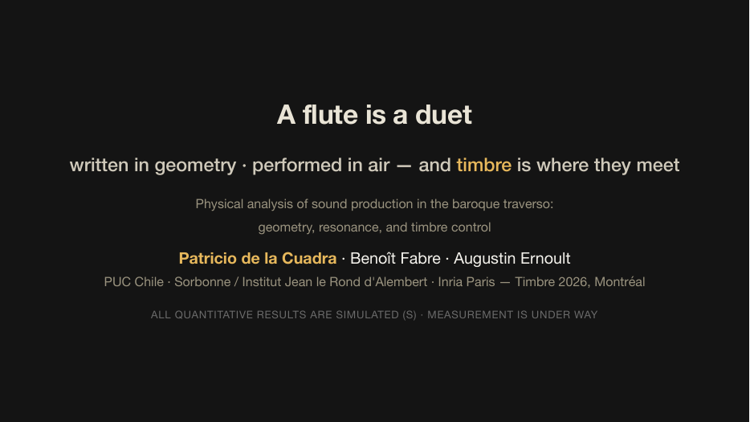
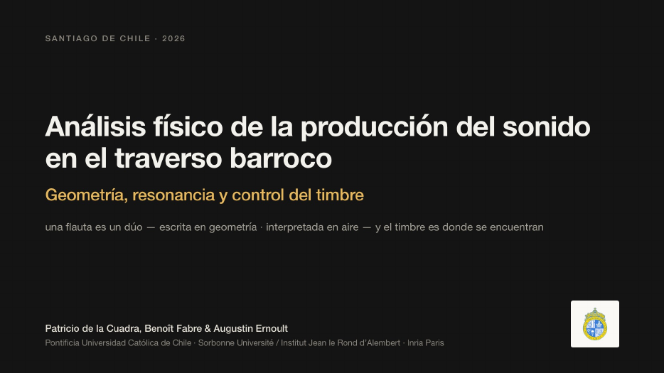

Reunión de colegas · proyectos IA · 27 de octubre de 2026
Lo que he hecho con IA
Un recorrido por los proyectos, ordenados de más complejo a más simple: investigación, software, docencia, sistema de trabajo y vida diaria.
36
proyectos vivos en Notion
7
líneas de investigación
~40
carpetas de trabajo con memoria propia
Patricio de la Cuadra
CITA · Ingeniería Eléctrica · Pontificia Universidad Católica de Chile
Antes de los proyectos
Cómo trabajo: una terminal sobre mis archivos, no un chat
Claude Code en el disco
Corre en la terminal, dentro de la carpeta del proyecto en Google Drive. Lee los datos reales, escribe código, lanza simulaciones, renderiza PDF y mide resultados.
Un modelo audita a otro
Opus diseña y diagnostica, Sonnet ejecuta en subagentes, Fable audita con el encargo «sé duro: busca fallos, no confirmaciones». Nunca el mismo modelo revisa su trabajo.
Memoria por proyecto
Cada carpeta tiene su CLAUDE.md, su bitácora y su memoria persistente. Notion es la única agenda; Drive guarda el material; las decisiones científicas viven en archivos, una ley por archivo.
Protocolo de cierre
Comandos propios: /cerrar registra bitácora, Notion y próximo paso; /verificar comprueba lo hecho con otro modelo; /auditar lanza al auditor adversario sobre un resultado.
Regla de evidencia en todo lo científico: distinguir siempre simulado, medido e hipótesis; nunca fabricar referencias ni mediciones.
02 · Patricio de la Cuadra · Proyectos con IA · 2026
El mapa
Cinco niveles, de más complejo a más simple
1
Investigación
Motor acústico y corpus
Cinco papers
Colección Spohr
Diseño inverso
Curso Coltman y Benade
Torno CNC y roscas
Robot flautista
Acústica médica
2
Docencia
Tres cursos rediseñados, dos con sitio público
Más de 60 demos interactivas con audio
Campus de afinaciones (15 módulos)
Charlas y decks
Entrenadores de Cálculo
3
Software profesional
MGlass: optimizador de cortes de vidrio en Odoo, en producción
Informe de un sistema solar domiciliario
4
Sistema de trabajo
Comandos y agentes propios
Sincronización con Notion
Rendición de gastos
Rutinas en la nube
Orden del disco
5
Colaboraciones y personal
Pedidos de almuerzo de Raúl
Partituras y afiches
Rescate de cintas MiniDV
Una docena de mini-apps
03 · Patricio de la Cuadra · Proyectos con IA · 2026
Nivel 1 · Investigación
complejidad
Acústica del traverso barroco: motor, corpus y laboratorio
Un motor de simulación propio (flutelab, sobre OpenWind) predice la afinación de una flauta a partir de su geometría. Un corpus de flautas históricas digitalizadas lo alimenta; una GUI, el «Flautoscopio», lo muestra.
Motor pasivo más un modelo de intérprete calibrado; cada convención científica (corcho, frontera de corte, embocadura, temperatura) es una ley escrita en su archivo.
Corpus de perces en JSON con procedencia y un verificador web planos ↔ JSON.
Batería de pruebas con «golden masters»: 0 FAIL antes de que una cifra salga a un paper.
La IA escribió y refactorizó el código, corrió barridos de horas y detectó artefactos del palpador en los datos (cola fantasma, agujeros contados dos veces).
05 · Patricio de la Cuadra · Proyectos con IA · 2026
Nivel 1 · Investigación
complejidad
Colección Spohr: tres flautas históricas digitalizadas y modeladas
Un coleccionista alemán nos pasó escaneos de perce de un Denner, un Palanca y un Grenser. Del dato crudo al informe trilingüe, con correspondencia científica de ida y vuelta.
Fotogrametría validada a ±0,16 mm contra calibre; perce deducida con regla de dos ejes anclada a cada agujero.
Batería de simulaciones de entonación por flauta; sensibilidad al socavado de la embocadura (figura).
Informes v2 en español, alemán e inglés, generados desde una sola fuente Markdown; borradores de respuesta a cada carta.
Material confidencial: scans y planos nunca salen del disco.
06 · Patricio de la Cuadra · Proyectos con IA · 2026
Nivel 1 · Investigación
complejidad
Diseño inverso: de la afinación deseada a la geometría
Dos optimizadores: diseño desde copia (corregir una flauta existente) y diseño desde cero (construir agujero por agujero a partir de diapasón, temperamento y manera de tocar).
Jerarquía del luthier implementada: la perce es diseño, el corcho es ajuste, los agujeros son muestreo.
Mapa de sensibilidad nodo/antinodo: cuánto mueve cada nota un +0,1 mm de radio en cada punto de la perce (figura).
Política de riesgo del modelo: diseño pasivo como línea base hasta medir el control del músico.
La IA escribió los optimizadores y sus tests, y propuso la métrica de «uniformidad del salto de octava».
Código: CODIGO/activo/traverso/diseno_desde_copia y CODIGO/activo/diseno_desde_cero (repos locales en Drive)


07 · Patricio de la Cuadra · Proyectos con IA · 2026
Nivel 1 · Investigación
complejidad
Curso «Coltman y Benade» y los cuadernos inéditos de Stanford
Estudio consolidado de los dos físicos que fundaron la acústica de la flauta, convertido en un curso web de 10 módulos con un motor de simulación en JavaScript, y traducido al francés para Benoît Fabre.
Los cuatro papers de flauta de Benade resultaron ser las cuatro piezas del motor; se corrigió una fórmula de embocadura al releerlos.
Hallazgo nuevo: el Fa♯ es la nota más baja en 7 de 7 flautas históricas, y su mecanismo geométrico.
Cuadernos de laboratorio de Coltman (archivo MARL, Stanford): bajados, mapeados y transcritos con herramientas propias.
Traducción al francés con glosario, trozos verificables y revisión en cadena Sonnet → Sonnet → Opus para no gastar la cuota del modelo caro.
INVESTIGACION/lineas/01-Traversos/biblioteca/Curso-Coltman-Benade/index.html · biblioteca de 373 documentos indexada por script


08 · Patricio de la Cuadra · Proyectos con IA · 2026
Nivel 1 · Investigación · fabricación
complejidad
Del modelo a la viruta: torno CNC y una roscadora de madera
La IA también mueve máquinas. Dos frentes de taller dentro de proyectos financiados (DAC Exploración «Hilos de madera» y la línea Traversos).
Torno y fresa Wabeco con Mach4: generador de G-code para escariadores y manguitos, puente de scripts a la pantalla de la máquina, verificación del programa cargado por hash. Un accidente del 26-09 quedó registrado como ley: «la herramienta debe caber en el agujero actual».
Roscadora orbital de madera: máquina y tornillo/tuerca 50×6 modelados en build123d (CAD en Python); STEP y STL por pieza para el carpintero, manual de 24 páginas y visor 3D animado generados por script.
09 · Patricio de la Cuadra · Proyectos con IA · 2026
Nivel 1 · Investigación · robótica
complejidad
Pierre, el robot flautista: refactor de un sistema de nueve grados de libertad
Software de control de un robot que toca flauta traversa: tres ejes con motores paso a paso, controlador de flujo de aire, servos para los dedos, sensor de presión y micrófono, todo por EtherNet/IP.
Arquitectura multiproceso (GUI en PyQt5 ↔ «músico») reescrita sobre el código heredado, con tests de regresión de cinemática y de conversiones.
Protocolo de pruebas, plan de mejoras y changelog documentados; respuestas al escalón medidas por eje.
Propuesta de cabezal sensorizado en evaluación; paper para Acta Acustica en pausa.
10 · Patricio de la Cuadra · Proyectos con IA · 2026
Nivel 1 · Investigación · acústica aplicada a la medicina
complejidad
Dos proyectos nuevos donde la IA es parte del método, no solo de la redacción
Flujómetro de orina acústico
Estimar la curva de flujo urinario a partir del sonido de la micción, con aprendizaje supervisado. Tesis de magíster en curso (Magdalena Araya), postulación Fondef armada con la IA y conversaciones de transferencia tecnológica con una asociada.
Colaboración recién abierta con UC Christus (reunión del 23-10): apoyar la lectura de exámenes Holter. Esperando archivos anonimizados y pantallazos del visor actual para definir el alcance.
Línea 07 Acústica aplicada · estado: exploratorio
Qué hizo la IA hasta ahora: revisión de literatura, diseño del protocolo de datos, borradores de postulación y de correos, y la propuesta de títulos de tesis. Lo clínico lo deciden los médicos del equipo.
11 · Patricio de la Cuadra · Proyectos con IA · 2026
Nivel 2 · Docencia
complejidad
Dos cursos rediseñados de punta a cabo: Señales y Sistemas, Acústica Musical
Objetivos de aprendizaje → plan de semestre → material. Fuente única en Quarto, sitio público generado por CI, sincronización con Canvas por script.
IEE2103 Señales y Sistemas: Reader de 7 capítulos, slides con 13 gráficos 3D vivos, banco de ejercicios con armador de pruebas, handouts de ayudantía, verificador de enunciados autocontenidos.
Acústica Musical: 15 sesiones y libro; datos del curso en un YAML que un verificador de consistencia cruza antes de cada commit; demos y audios embebidos en las láminas.
Reglas aprendidas a golpes: las pautas nunca al sitio; nada de jerga de diseño en material de estudiantes.
12 · Patricio de la Cuadra · Proyectos con IA · 2026
Nivel 2 · Docencia · demos
complejidad
Acústica Musical: catorce demos que suenan, una por concepto
Nosotros aprendimos acústica oyéndola. Cada sesión tiene una demo HTML autocontenida (JavaScript y Web Audio, cero dependencias) que se abre con doble clic en cualquier sala y suena.
Tren de pulsos: del ritmo al tono · forma de onda y espectro con el micrófono en vivo · la fundamental ausente · batidos → banda crítica → consonancia · temperamentos · resonancia forzada · Helmholtz · tubo virtual con agujeros · fuente y filtro de la voz · modos de sala.
Modo predicción: el alumno anota qué va a pasar antes de oírlo; modo presentación con los números ocultos para la escucha del día.
Bloque «¿Qué observar?» con preguntas guía; las demos van embebidas en las láminas: en la sala se abre solo el mazo.
Regla: una demo = un concepto; si crece hacia dos ideas, se divide.
13 · Patricio de la Cuadra · Proyectos con IA · 2026
Nivel 2 · Docencia · demos
complejidad
Señales y Sistemas: ver en 3D y oír lo que antes era una fórmula
Unas cuarenta demos y apps, ordenadas por clase: HTML autocontenido que se incrusta en las láminas, apps en Python y notebooks para la casa.
Analizador de espectro en vivo para tocar un instrumento en la primera clase.
Convolución audible: meter tu voz en una iglesia con respuestas al impulso reales; la cascada de dos espacios, al oído y paso a paso.
Laplace sin dolor: «amortiguar y después proyectar», la ROC como costa y terreno, la sombra del polo con polos arrastrables, el espectro complejo girable en 3D.
Muestreo: aliasing en vivo, la hélice muestreada, «¿cuál es periódica?» muestra a muestra; FFT paso a paso con sus mariposas.
Audio DSP: Karplus-Strong, filtros peine y biquad con osciloscopio, phase vocoder (voz robot vs. susurro).
14 · Patricio de la Cuadra · Proyectos con IA · 2026
Nivel 2 · Docencia
complejidad
Análisis y Síntesis de Señales Musicales: el sonido, desde los bytes hasta la IA
Curso de 12 semanas para ingenieros eléctricos, diseñado desde cero con la IA: «enseñar es aprender dos veces». No hay cátedra: hay seminarios de pares, Fun Tasks semanales y un proyecto de software de audio.
Tres módulos: Atoms (bytes, convolución, filtros, delays), Spectra (STFT, phase vocoder, modelo sinusoidal) y Creation (síntesis, FM, Karplus-Strong, MIR, audio con IA).
Fun Tasks con nombre propio: Glitch Art, Impossible Spaces, Auto-Wah Funk, Dub Echo, Robot Voice, Dumb Shazam, Neural Style…
Diez demos web con audio y un sitio para que un alumno decida si tomar el curso jugando con ellas; guía del mini-docente por sesión; rúbricas y guía de proyecto en tres hitos.
Uso explícito de la IA como herramienta de los estudiantes, con una ficha de uso acordada.
15 · Patricio de la Cuadra · Proyectos con IA · 2026
Nivel 2 · Docencia
complejidad
Un campus de afinaciones para compositores: 15 módulos con laboratorio sonoro
Del pitagórico al temperamento igual y más allá: comprender, derivar, escuchar y comparar. Funciona sin instalar nada, offline, con el progreso guardado en el navegador.
Cada módulo: apunte con la matemática paso a paso, laboratorio interactivo con audio, ejercicios resueltos y mini-composición.
Tres fases, currículo escrito, guía para autores; los apuntes se generan desde Markdown con un script.
Regla del proyecto: yo no valido el contenido de afinaciones; la IA verifica cada cifra con un cálculo independiente, siempre.
Hermano de escritorio: «Suena afinaciones antiguas», app en Python para escuchar temperamentos.
16 · Patricio de la Cuadra · Proyectos con IA · 2026
Nivel 2 · Docencia y divulgación
complejidad
Charlas: el mismo relato, cuatro públicos
Charla
Público
Formato
«A flute is a duet»
TIMBRE 2026, Montreal
Marp, 2 demos en vivo
«Una flauta es un dúo»
Colegas, Chile 2026
Deck traducido, PDF y guion
«¿Quién afina la flauta?»
Estudiantes de música
Deck con clips y figuras
Temas de magíster
Ingenieros eléctricos
Deck web compartible
La IA escribe el guion del orador, genera las figuras desde el código del proyecto y arma el deck por script (se regenera, no se edita a mano).
Columna vertebral común: la flauta es un dúo entre la geometría y el músico; lo que afina es el intérprete.
traverso-papers/presentaciones/ y conferencia-timbre26/presentacion_timbre2026/


17 · Patricio de la Cuadra · Proyectos con IA · 2026
Nivel 2 · Docencia en casa
complejidad
Entrenadores de Cálculo I y II para mis hijos
Una app web por curso (MAT1100 y MAT1220), construida a partir del programa real, las pruebas antiguas y las pautas: ejercicios por unidad, diagnóstico, simulacros cronometrados.
Contrato de contenido en un CONVENTIONS.md y un validador (node scripts/validate.mjs) que rechaza ejercicios mal formados.
Simulacros A–D impresos sin pauta, para hacer en 100 minutos y corregir después.
Las dos apps comparten código: un arreglo de interfaz se aplica a ambas.
18 · Patricio de la Cuadra · Proyectos con IA · 2026
Nivel 3 · Software profesional
complejidad
MGlass: optimizador de cortes de vidrio, en producción en una fábrica
Módulo para Odoo 18 que toma una cotización de vidrios, calcula cómo cortar las planchas con mínimo desperdicio y genera planos, archivos para la mesa de corte y etiquetas con código de barras.
Generación de columnas para el empaquetado; comparación directa con el software comercial del cliente: 28 planchas contra 28,5.
Más de 50 pull requests revisados y mezclados por el integrador externo; staging y pase a producción el 21-10.
Etiquetas probadas en impresora térmica, manual de operarios en PDF y HTML, webapp para vendedores en terreno.
Acuerdo comercial de licencia cerrado en septiembre; propiedad intelectual propia.
19 · Patricio de la Cuadra · Proyectos con IA · 2026
Nivel 3 · Software profesional
complejidad
Un año de datos de un sistema solar domiciliario, en un informe de una pantalla
Inversor híbrido con dos baterías de litio en una casa de El Arrayán, monitoreado cada 5 minutos desde agosto de 2025. La pregunta del dueño: ¿cuánto de mi casa cubre el sol y qué me conviene hacer?
Scripts que descargan los registros del portal del fabricante, los limpian y calculan el balance sol / batería / red.
Respuesta: el sistema cubre el 77 % de la casa; el resto se resume en tres decisiones.
Informe en HTML y PDF con Excel anexo; auditoría escrita de las cifras antes de enviarlo.
22 · Patricio de la Cuadra · Proyectos con IA · 2026
Nivel 5 · Música y gestión
complejidad
Partituras, afiches, programas y una marca que defender
«Recados a Gabriela» (Barroco Andino): conversor vectorial propio que lee 24 partituras PDF exportadas de Sibelius y las vuelve editables para rearmar particellas. Falla conocida en cambios de métrica, registrada como prioridad.
Afiches y programas de concierto: jazz (dos cuartetos, Thelonious y Hotel Nodo) y el programa estilo postal del concierto del 8 de septiembre.
Defensa de la marca Barroco Andino: cronología del caso, datos verificados en INAPI, revisión de los borradores de los abogados. Regla aprendida: las respuestas legales, cortas y derivadas a los abogados.
Temporada Música UC 2027: dos programas propuestos y la postulación armada.
24 · Patricio de la Cuadra · Proyectos con IA · 2026
Cierre
Lo que aprendí, por si le sirve a alguien más
1
Que un modelo distinto audite. Encontró en horas lo que otro arrastró semanas. Encargo: «sé duro: busca fallos, no confirmaciones».
2
Una sesión por proyecto, en su carpeta. Con bitácora, memoria y protocolo de cierre; el contexto se va, lo importante queda escrito.
3
Preguntar «¿qué puede salir mal?» antes de cualquier «dale». Cinco segundos que evitan dos horas de renders fallidos.
4
El conocimiento de dominio sigue siendo mío. La IA calcula y redacta; saber que un luthier sabe que el socavado manda, eso no lo sabe.
Esta presentación se armó hoy en una sesión, leyendo Notion, las memorias de cada proyecto y el disco; las capturas las tomó Chrome sin cabeza. Patricio de la Cuadra · pcuadra@uc.cl
25 · Patricio de la Cuadra · Proyectos con IA · 2026